DAW · curso 3
6. JSP
6.1 Introducción a JSP
JSP (Java Server Pages) son páginas HTML con líneas de código adicional que se ejecutan en el servidor para generar contenido dinámico.
Ideas clave:
- se traducen automáticamente a servlets;
- después de traducirse se compilan y se ejecutan como servlets;
- si se modifica la JSP, el contenedor vuelve a traducirla;
- ayudan a separar presentación y lógica de negocio;
- la lógica de negocio debe quedar encapsulada en servlets, JavaBeans o clases del modelo, no mezclada en la vista.
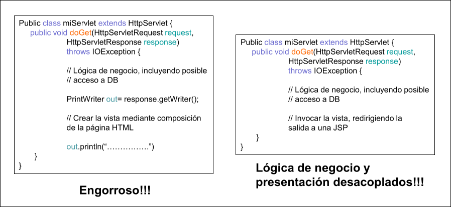
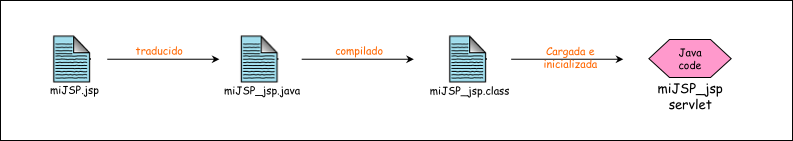
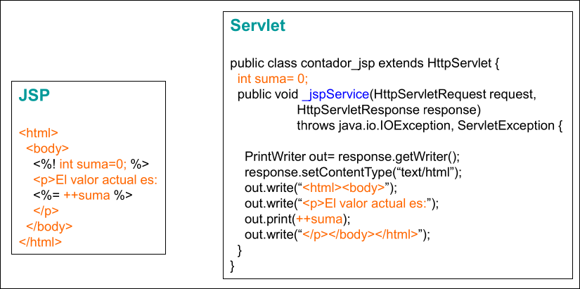
Componentes JSP
Una JSP se parece a HTML, pero puede contener componentes especiales, muchos delimitados por <% ... %>.
| Componente | Sintaxis | Uso | Traducción al servlet |
|---|---|---|---|
| Comentario JSP | <%-- ... --%> |
Comentario que no se envía al cliente. | No aparece en la respuesta. |
| Declaración | <%! ... %> |
Define variables y métodos. | Fuera de _jspService(). |
| Expresión | <%= ... %> |
Evalúa Java y escribe el resultado. | Se inserta como salida. |
| Scriptlet | <% ... %> |
Código Java arbitrario. Puede declarar variables, pero no métodos. | Dentro de _jspService(). |
| Directiva | <%@ ... %> |
Instrucciones de compilación/traducción. | Modifican el servlet resultante. |
| Acción JSP | <jsp:accion ... /> |
Control de flujo y acceso a JavaBeans. | Se evalúa en cada petición. |
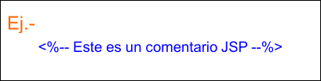
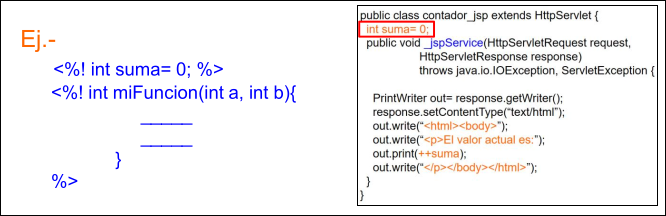
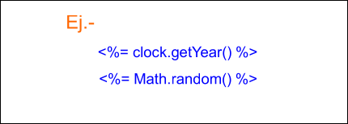
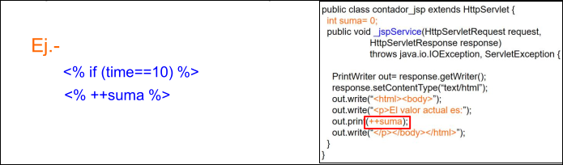
Directivas
Las directivas se procesan cuando la página se traduce a servlet. No devuelven contenido, pero afectan a la estructura resultante.
| Directiva | Uso |
|---|---|
page |
Define características globales de la JSP. |
include |
Inserta contenido de ficheros externos en tiempo de traducción. |
taglib |
Declara librerías de etiquetas estándar o propias. |
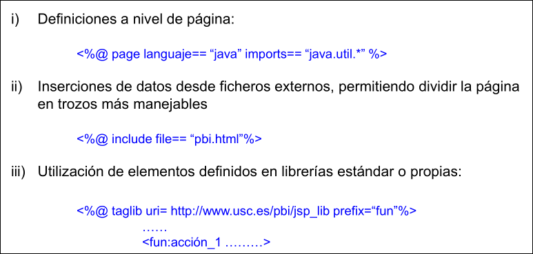
Directiva page
| Atributo | Significado |
|---|---|
language |
Lenguaje de scripting; Java por defecto. |
extends |
Superclase del servlet generado. |
import |
Lista de clases o paquetes importados. |
session |
Indica si la JSP participa en sesiones HTTP. |
buffer |
Tamaño del buffer; por defecto 8 KB. |
autoFlush |
Si el buffer se vacía automáticamente. |
isThreadSafe |
Si el contenedor puede despachar varios hilos simultáneamente. |
info |
Texto devuelto por getServletInfo(). |
errorPage |
URL de la página a usar en caso de error. |
isErrorPage |
Si es página de error y puede acceder a exception. |
contentType |
Tipo MIME de la respuesta; por defecto se cita text/html; charset=ISO-8859-1. |
pageEncoding |
Codificación de la página. |
isELIgnored |
Si se ignoran expresiones EL. |
Acciones JSP
Las acciones usan sintaxis XML y se reevalúan cada vez que se accede a la página.
| Acción | Uso |
|---|---|
jsp:forward |
Reenvía request y response a otro recurso. |
jsp:include |
Incluye otro recurso en la página. |
jsp:param |
Añade parámetros a forward o include. |
jsp:useBean |
Localiza o instancia un JavaBean. |
jsp:setProperty |
Modifica una propiedad de un JavaBean. |
jsp:getProperty |
Recupera una propiedad de un JavaBean. |
jsp:plugin |
Incrusta componentes como applets. |
jsp:fallback |
Mensaje alternativo para jsp:plugin. |
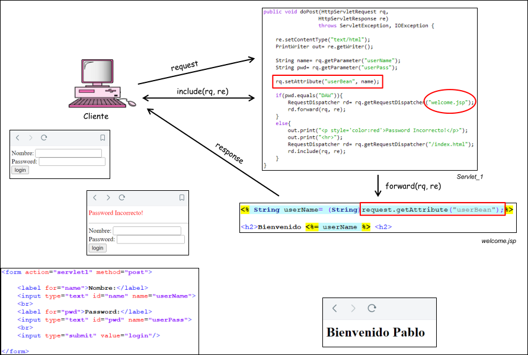
Comparación de includes:
Directiva include |
Acción jsp:include |
|---|---|
| Incluye en el momento de traducción. | Incluye en el momento de la llamada. |
| Mejor para páginas estáticas. | Mejor para páginas dinámicas. |
| No permite parámetros. | Permite parámetros. |
| Integra el contenido en el servlet generado. | Evalúa el recurso al ejecutar la petición. |
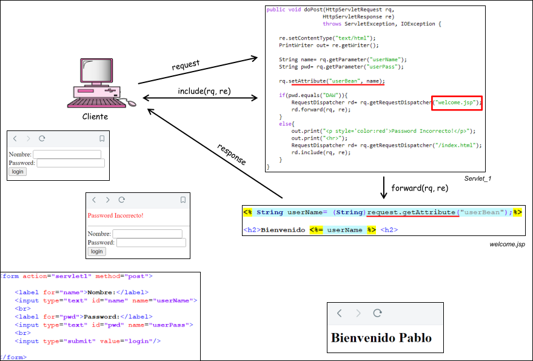
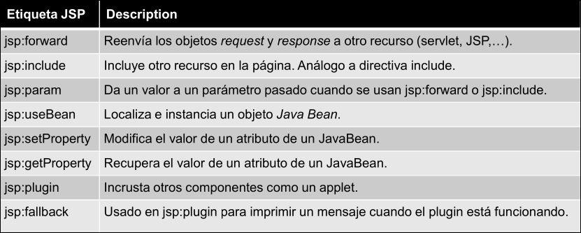
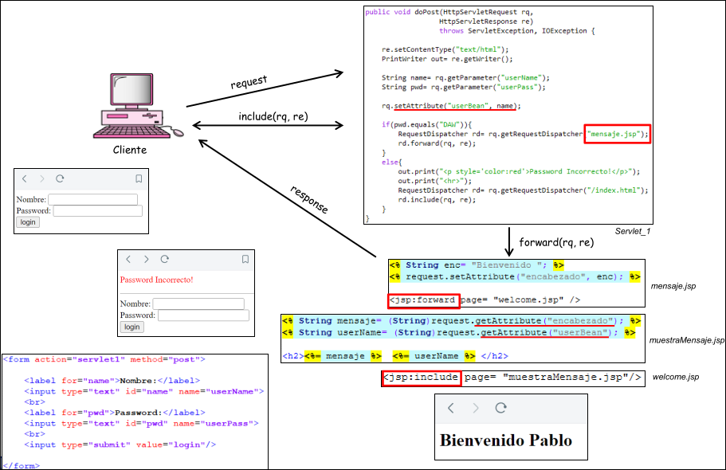
6.2 Objetos implícitos, atributos y reenvío
Los objetos implícitos son objetos declarados e inicializados por el contenedor, disponibles dentro de _jspService() sin crearlos manualmente.
El acceso se organiza alrededor de pageContext, que se obtiene mediante getPageContext() de JspFactory.
| Objeto | Clase | Uso | Método desde pageContext |
|---|---|---|---|
out |
JspWriter |
Almacena la respuesta enviada al cliente. | getOut() |
request |
HttpServletRequest |
Datos enviados por el cliente. | getRequest() |
response |
HttpServletResponse |
Datos enviados por el servidor. | getResponse() |
session |
HttpSession |
Identificación del usuario entre páginas. | getSession() |
application |
ServletContext |
Comunicación con el contenedor y datos globales. | getServletContext() |
config |
ServletConfig |
Configuración de inicialización. | getServletConfig() |
exception |
JspException / excepción |
Información de excepción en páginas de error. | Disponible si isErrorPage=true. |
page |
Object |
Servlet obtenido de la JSP. | Referencia al servlet. |
pageContext |
PageContext |
Manejo de atributos en page, request, session, application. |
getPageContext() |
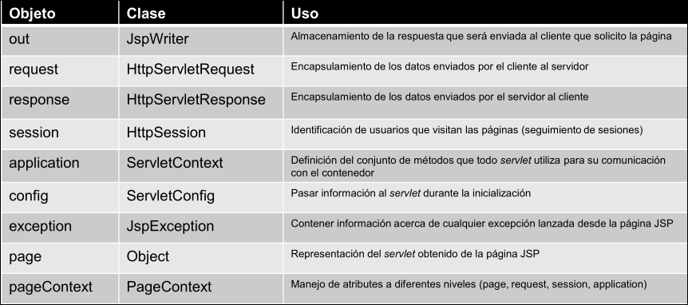
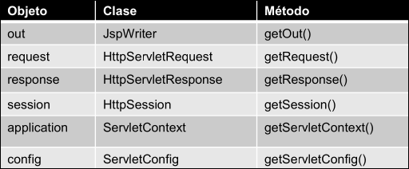
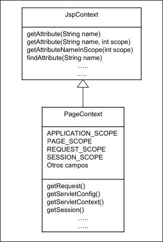
Atributos
Los atributos en JSP son análogos a los de servlets, pero añaden el ámbito page.
| Ámbito | Servlet | JSP |
|---|---|---|
| Aplicación | getServletContext().get/setAttribute() |
application.get/setAttribute() |
| Petición | request.get/setAttribute() |
request.get/setAttribute() |
| Sesión | request.getSession().get/setAttribute() |
session.get/setAttribute() |
| Página | No existe | pageContext.get/setAttribute() |
Constantes de pageContext:
APPLICATION_SCOPE;PAGE_SCOPE;REQUEST_SCOPE;SESSION_SCOPE.
Métodos útiles:
pageContext.findAttribute(nombre): busca enpage,request,session,application;getAttributeNamesInScope(scope): lista atributos de un ámbito.
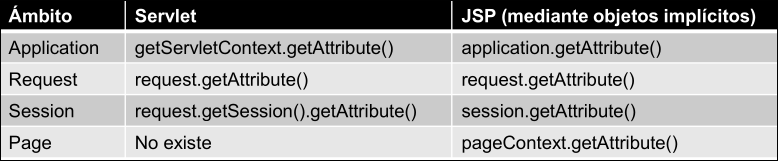
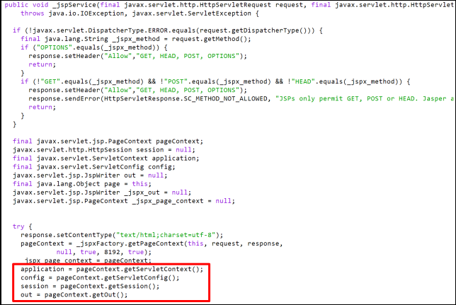
Reenvío de petición
Para delegar procesamiento se puede usar RequestDispatcher desde un servlet o acciones JSP desde una JSP.
| Operación | Efecto |
|---|---|
forward(request, response) |
Cede el control a otro recurso con la misma petición y respuesta. |
include(request, response) |
Inserta la salida de otro recurso sin perder el control. |
jsp:forward |
Equivalente JSP para reenviar. |
jsp:include |
Equivalente JSP para incluir. |
Como se reutiliza la misma request, los datos se pueden pasar con request.setAttribute(...) antes del forward.
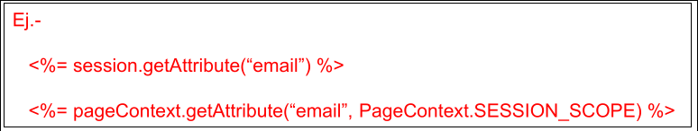
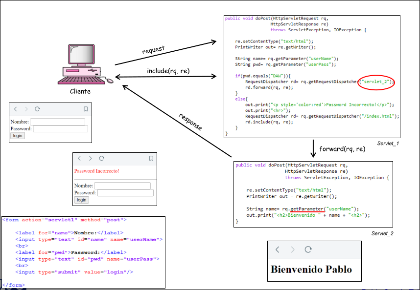
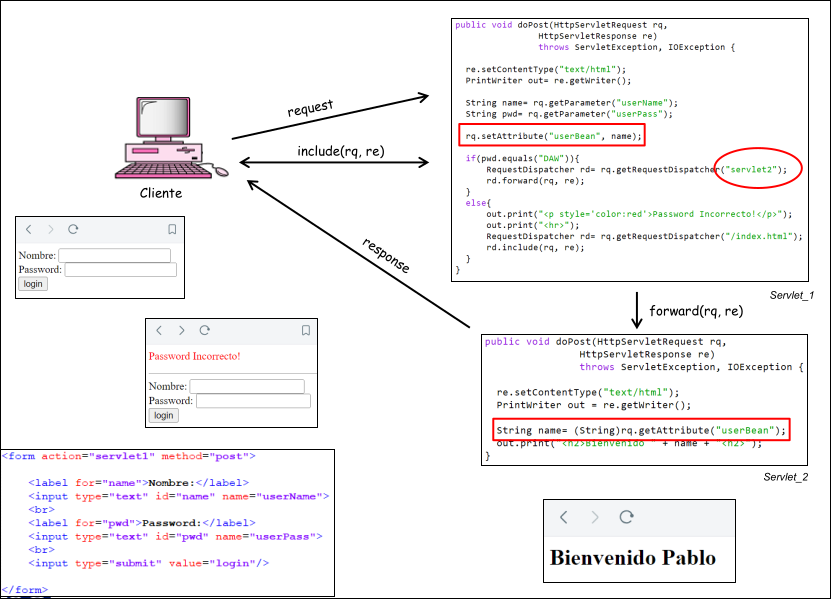
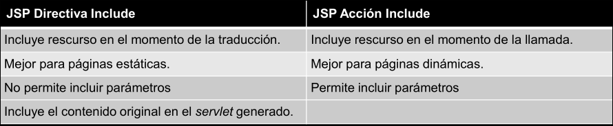
6.3 JavaBeans
Los scriptlets tienen dos problemas principales:
- al crecer la JSP, se vuelven largos y difíciles de mantener;
- la funcionalidad queda ligada a una JSP concreta y se reutiliza mal.
La solución es mover datos y lógica sencilla a JavaBeans.
Ventajas:
- reutilización de código;
- mejor separación entre diseñador y desarrollador;
- JSP más orientada a presentación.
Un JavaBean es una clase Java que mantiene datos mediante propiedades accesibles por getters y setters.
Convenciones:
- constructor sin argumentos;
- atributos privados;
- getters y setters con nomenclatura estándar;
- implementación de
Serializable.
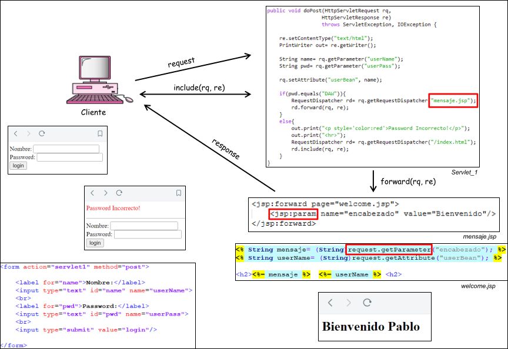
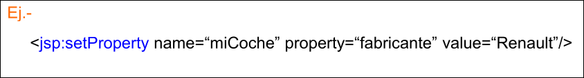
Acciones para JavaBeans
| Acción | Uso |
|---|---|
jsp:useBean |
Localiza un bean y lo instancia si no existe. |
jsp:setProperty |
Asigna una propiedad. |
jsp:getProperty |
Recupera una propiedad. |
jsp:useBean también guarda el objeto como atributo en un ámbito.
Ámbitos habituales:
page;request;session;application.
Comportamiento de jsp:useBean:
- busca el bean por
iden el ámbito indicado; - si existe, lo reutiliza;
- si no existe, lo instancia;
- lo guarda como atributo;
- si tiene cuerpo, el cuerpo solo se ejecuta cuando el bean se crea en ese momento.
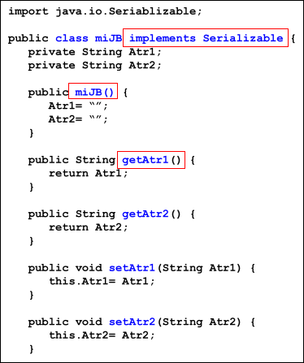
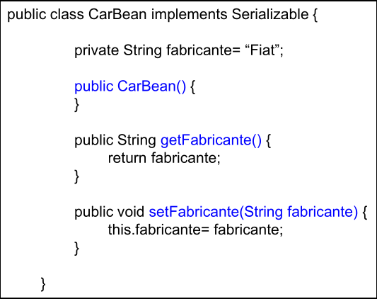
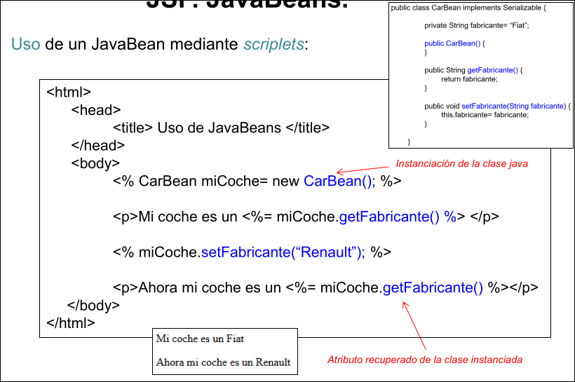
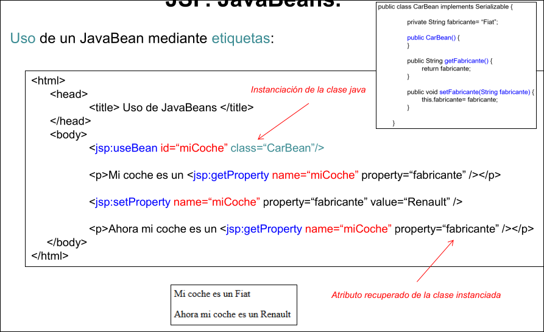
Beans creados en servlets
Patrón MVC recomendado:
- el servlet crea y rellena el bean;
- lo guarda como atributo en
requestosession; - hace
forward()a la JSP; - la JSP solo muestra datos con EL, JSTL o acciones JSP.
Ejemplo conceptual:
LoginBean bean = new LoginBean();
bean.setNombre(nombre);
request.setAttribute("pwdBean", bean);
request.getRequestDispatcher("welcome.jsp").forward(request, response);
En JSP puede recuperarse con jsp:useBean indicando el mismo scope, o más modernamente con EL: ${pwdBean.nombre}.
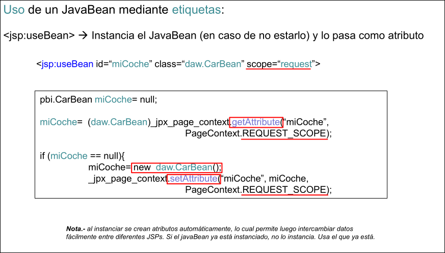
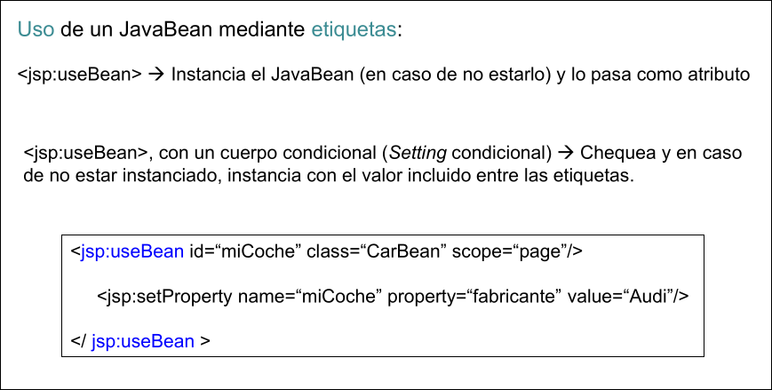
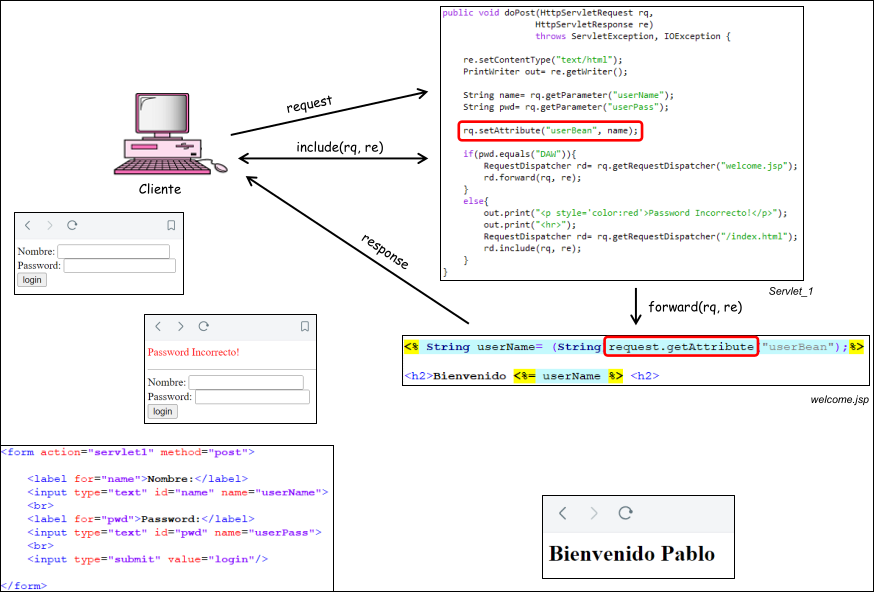
Referencias polimórficas
Si el bean se instancia directamente, basta con class.
Si se quiere declarar una referencia de un tipo y crear una clase concreta, se combinan:
| Atributo | Uso |
|---|---|
type |
Tipo de la referencia visible. |
class |
Clase concreta que se instancia. |
Esto evita problemas cuando el tipo de referencia es abstracto. Si se intenta instanciar una clase abstracta con class, puede producirse InstantiationException.
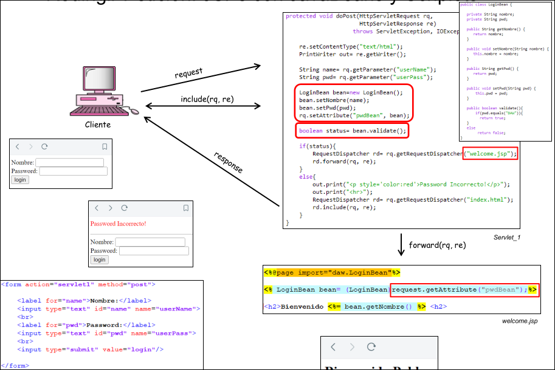
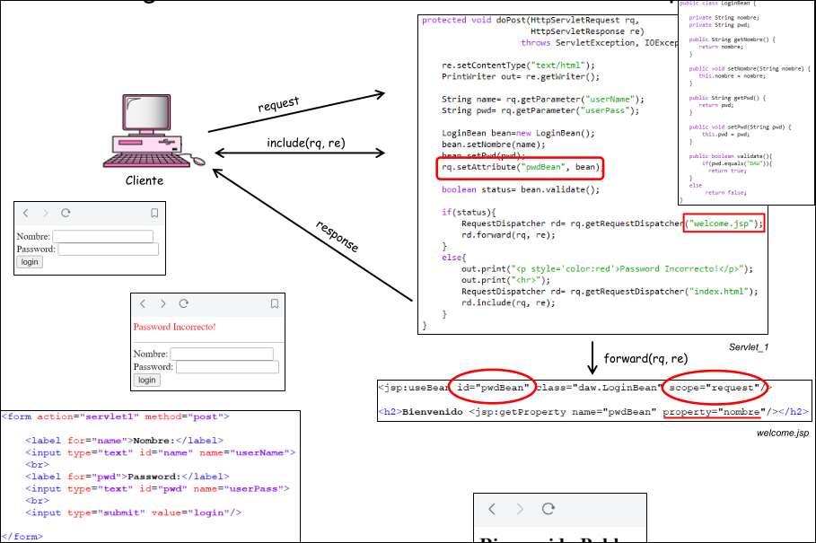
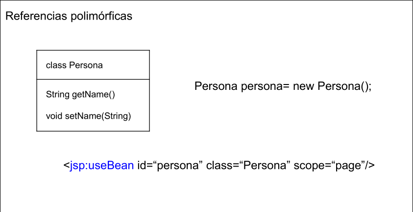
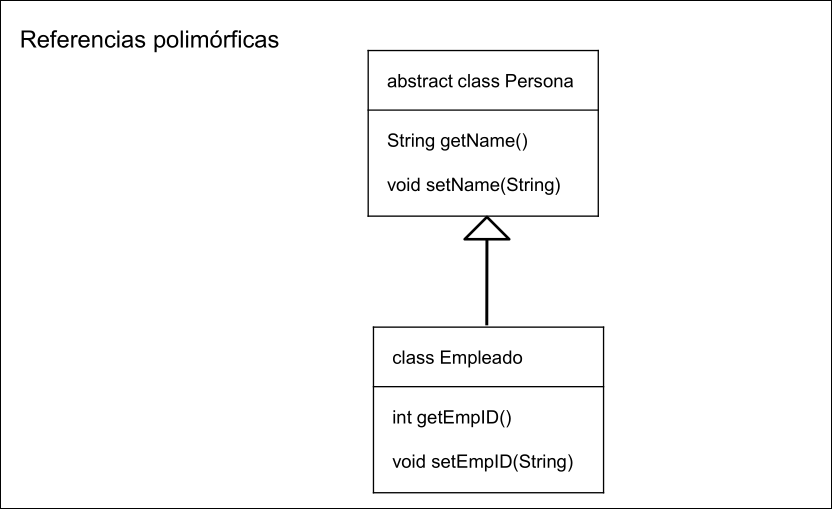
Formularios y JavaBeans
Los datos de formulario se pueden copiar a un bean:
| Caso | Forma |
|---|---|
| Campo y propiedad no coinciden | property="name" param="userName". |
| Usar expresión Java | value="<%= request.getParameter(...) %>". |
| Campo y propiedad coinciden | property="name" sin param. |
| Copiar todas las coincidencias | property="*". |
property="*" intenta rellenar todas las propiedades para las que exista un parámetro de petición con el mismo nombre.
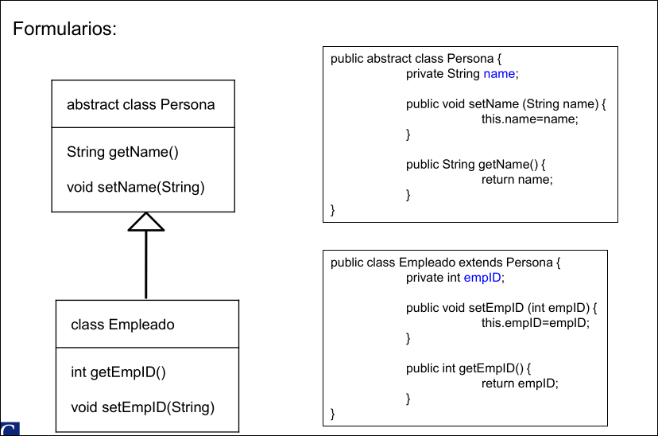
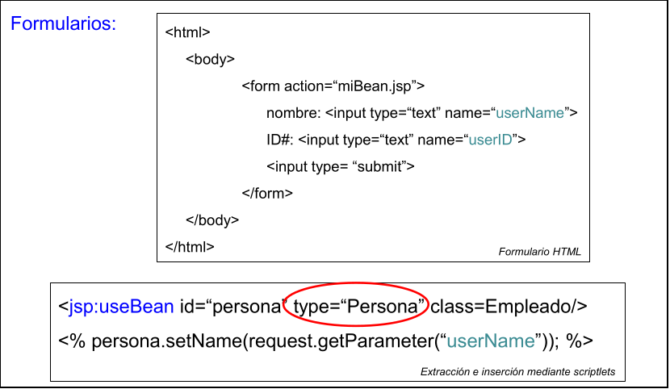
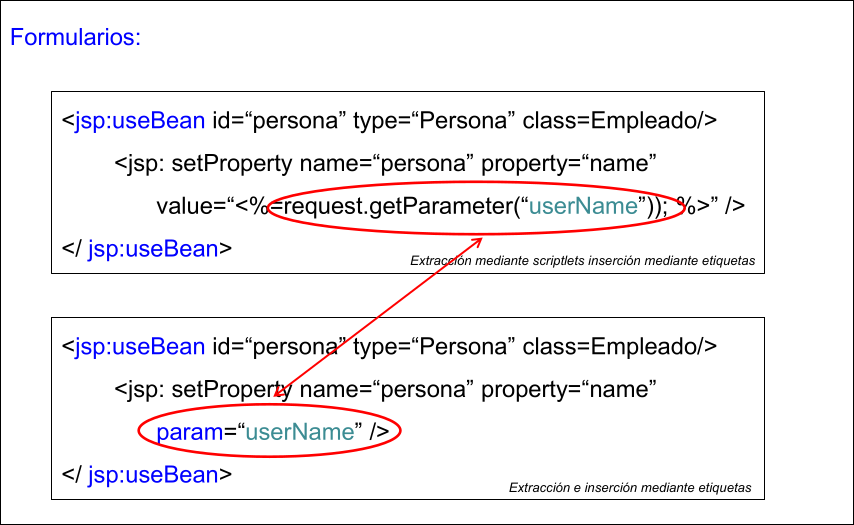
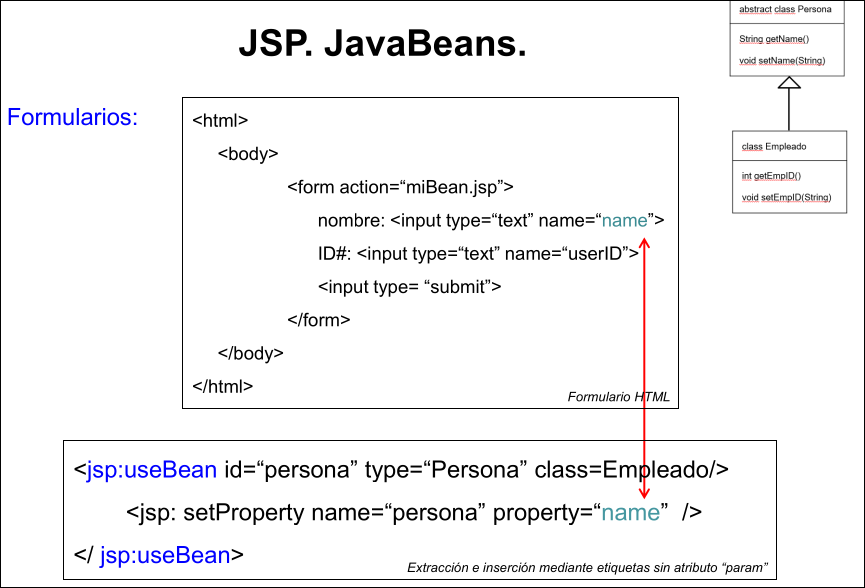
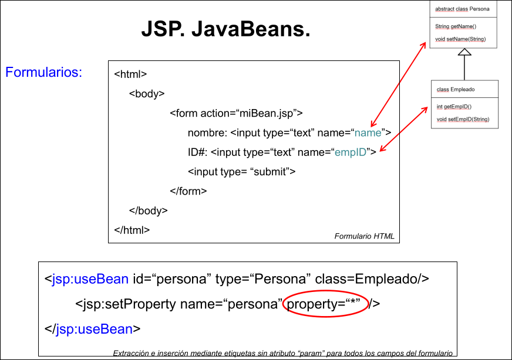
6.4 JSP Expression Language
JSP Expression Language (EL) proporciona una sintaxis compacta para manejar JavaBeans, arrays, listas y mapas almacenados como atributos.
Para reconocer EL puede usarse:
<%@ page isELIgnored="false" %>
Ventajas:
- sintaxis compacta;
- acceso cómodo a propiedades anidadas;
- acceso a JavaBeans y colecciones;
- acceso a parámetros, cabeceras, cookies y parámetros de inicialización;
- permite comparaciones y cálculos.
Limitación:
- EL está pensada para leer datos, no para instanciar o modificar JavaBeans.
Sintaxis y búsqueda por ámbitos
Sintaxis:
${objeto.propiedad}
${lista[0]}
${mapa["clave"]}
Si objeto no es implícito de EL, se busca como atributo en este orden:
page;request;session;application.
Para evitar conflictos se puede indicar el ámbito:
${pageScope.nombre}
${requestScope.error}
${sessionScope.usuario.nombre}
${applicationScope.valor}
Objetos implícitos EL
| Objeto EL | Uso |
|---|---|
pageScope |
Atributos de la página JSP actual. |
requestScope |
Atributos de la petición actual. |
sessionScope |
Atributos de la sesión. |
applicationScope |
Atributos globales de aplicación. |
param |
Parámetro simple de URL o formulario. |
paramValues |
Parámetros con varios valores, como select multiple. |
header |
Cabecera HTTP. |
headerValues |
Cabeceras HTTP multivalor. |
cookie |
Cookies del usuario. |
initParam |
Parámetros globales de inicialización configurados en XML. |
pageContext |
Acceso a ámbitos, atributos y otros objetos implícitos. |
Ejemplos:
${param.name}
${paramValues.food[1]}
${cookie.asignatura.value}
${initParam.miEmail}
Operadores
| Tipo | Operadores | ||
|---|---|---|---|
| Acceso | . y [indice/clave]. |
||
| Aritméticos | +, -, *, / o div, % o mod. |
||
| Relacionales | == o eq, != o ne, < o lt, > o gt, <= o le, >= o ge. |
||
| Lógicos | && o and, ` |
oor, !onot`. |
|
| Vacío | empty x: true si x es null, string vacío, array/list/map vacío. |
||
| Ternario | x ? y : z. |
Uso dentro de MVC:
request.setAttribute("pwdBean", bean);
request.getRequestDispatcher("welcome.jsp").forward(request, response);
<h2>Bienvenido ${pwdBean.nombre}</h2>
La idea moderna es: el servlet prepara, la JSP muestra.
6.5 JSTL
JSTL (JavaServer Pages Standard Tag Library) amplía JSP con etiquetas estándar para eliminar scriptlets.
Para usarla:
- incluir
jstl.jarenWEB-INF/lib; - declarar la librería con
taglib.
Ejemplo:
<%@ taglib uri="http://java.sun.com/jsp/jstl/core" prefix="c" %>
Ventajas:
- permite marcas más claras;
- es más sencilla, robusta y portable;
- permite crear marcas a medida;
- ayuda a que la vista no contenga Java embebido.
Librerías JSTL 1.2
| Librería | URI | Prefijo | Uso |
|---|---|---|---|
| Core | http://java.sun.com/jsp/jstl/core |
c |
Flujo, iteraciones, URLs y operaciones generales. |
| Formatting | http://java.sun.com/jsp/jstl/fmt |
fmt |
Internacionalización y fechas/números. |
| SQL | http://java.sun.com/jsp/jstl/sql |
sql |
Bases de datos relacionales. |
| XML | http://java.sun.com/jsp/jstl/xml |
x |
XML, flujo y transformaciones. |
| Functions | http://java.sun.com/jsp/jstl/functions |
fn |
Cadenas y funciones auxiliares. |
Librería core
| Etiqueta | Atributos principales | Resultado |
|---|---|---|
c:out |
value |
Muestra una expresión. |
c:set |
var, scope, value |
Evalúa y guarda valor como atributo. |
c:remove |
var |
Elimina un atributo. |
c:catch |
var |
Captura excepción en una variable. |
c:forEach |
var, begin, end, items |
Itera rango o colección. |
c:forTokens |
var, items, delims |
Itera tokens de una cadena. |
c:if |
test |
Muestra contenido si la condición es cierta. |
c:choose |
- | Condicional múltiple. |
c:when |
test |
Rama condicional de choose. |
c:otherwise |
- | Rama por defecto. |
c:import |
url |
Importa contenido de otro recurso. |
c:url |
value, var |
Construye una URL, normalmente segura para contexto/sesión. |
c:redirect |
url |
Redirige a otra URL. |
c:param |
name, value |
Añade parámetros a c:url, c:redirect o c:import. |
Ejemplos conceptuales: 1
<c:out value="${expresion}" />
<c:set var="nombre" scope="request" value="${expresion}" />
<c:forEach var="i" items="${array}">${i}</c:forEach>
<c:if test="${j gt 0}">positivo</c:if>
<c:url var="logout" value="/logout" />
c:out es preferible a imprimir texto sin escapar cuando el valor puede contener caracteres HTML/XML.
Otras librerías
fmt:
- internacionalización:
fmt:message,fmt:setLocale,fmt:bundle,fmt:setBundle,fmt:param,fmt:requestEncoding; - formato:
fmt:timeZone,fmt:setTimeZone,fmt:formatNumber,fmt:parseNumber,fmt:parseDate.
sql:
sql:query;sql:update;sql:setDataSource;sql:param;sql:dateParam.
Existe para teoría, pero en aplicaciones bien estructuradas el acceso real a datos debe estar en el modelo o capa de servicio.
xml:
- acciones básicas:
x:parse,x:out,x:set; - control de flujo:
x:if,x:choose,x:when,x:otherwise,x:forEach; - transformaciones:
x:transform,x:param.
fn:
fn:length,fn:toUpperCase,fn:toLowerCase;fn:substring,fn:substringAfter,fn:substringBefore;fn:trim,fn:replace,fn:indexOf;fn:startsWith,fn:endsWith;fn:contains,fn:containsIgnoreCase;fn:split,fn:join,fn:escapeXML.
Evolución práctica
La evolución recomendada en JSP es:
- scriptlets: mezclan Java y HTML;
- JavaBeans: separan datos;
- EL: lee datos con sintaxis compacta;
- JSTL: añade bucles, condicionales y utilidades sin Java embebido.
6.6 Preguntas y plantilla de examen
Definiciones breves:
| Concepto | Definición |
|---|---|
| JSP | Página HTML con etiquetas y fragmentos Java que el servidor traduce a servlet para generar contenido dinámico. |
| JavaBean | Clase reutilizable con constructor vacío, atributos privados, getters/setters y normalmente Serializable. |
| EL | Lenguaje de expresiones ${...} para leer atributos, beans, colecciones, parámetros, cabeceras, cookies y contexto. |
| JSTL | Librería estándar de etiquetas que sustituye scriptlets con etiquetas para flujo, iteración, formato, XML, SQL y funciones. |
Relación MVC:
- servlet = controlador;
- JSP = vista;
- JavaBean = datos/modelo simple.
JSP del ejercicio Servlet/JSP
Este bloque encaja con la plantilla del tema 5. Servlets.
login.jsp debe demostrar:
- directiva
pageconcontentTypeypageEncoding; - directiva
taglibpara JSTL core; - formulario que envía
POSTa/login; - lectura de error con EL o JSTL:
${error}; - uso de
${pageContext.request.contextPath}para construir rutas.
Patrón:
<c:if test="${not empty error}">
<p>${error}</p>
</c:if>
<form action="${pageContext.request.contextPath}/login" method="post">
<input name="nombre">
<input name="pwd" type="password">
</form>
panel.jsp debe demostrar:
- acceso a un bean guardado en sesión:
${sessionScope.usuario.nombre}; - iteración de una lista con
c:forEach; - salida segura con
c:out; - enlace de cierre de sesión.
Patrón:
<h1>Bienvenido ${sessionScope.usuario.nombre}</h1>
<c:forEach var="asig" items="${asignaturas}">
<li><c:out value="${asig}" /></li>
</c:forEach>
<a href="${pageContext.request.contextPath}/logout">Cerrar sesión</a>
Si en examen piden varios servlets, JSP y web.xml, la explicación queda:
- tema 5: servlets,
request/session,forward,redirect,web.xml; - tema 6: JSP, JavaBeans, EL y JSTL como capa de vista.